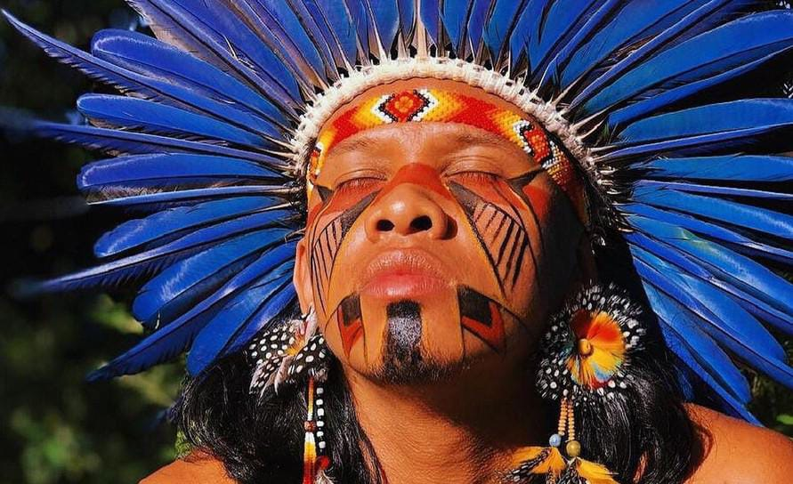

Desafios à sobrevivência dos povos indígenas no Brasil contemporâneo: invasões, mineração e agronegócio.
Indígenas brasileiros sob ataque
ㅤㅤO filme “Tainá - Uma aventura na Amazônia” (2000) retrata a luta dos
povos indígenas brasileiros contra as invasões e a exploração ilegal de seus
territórios. Análogo à ficção, esses nativos enfrentam invasões às terras
indígenas, a ausência efetiva de fiscalização potencializa os riscos à vida
dessas populações. O uso de suas terras para explorar as zonas e o
desmatamento constante para serviços agropecuários.
ㅤㅤDiante desse cenário, está apropriação ilegal dessas terras indígenas.
Segundo o Instituto Socioambiental (ISA, 2012), a não demarcação dessas
terras constitui o maior desses entraves para a conservação da integridade
dessas comunidades. A ocupação ilegal destes territórios por fazendeiros,
grileiros e empresas viola os direitos destes povos tradicionais ao impedir o
exercício de suas tradições e modos de vida, e com isso ocasionando
migrações, mortes e perdas culturais.
ㅤㅤNesse cenário de invasão, nota-se também persistirem os atos
violentos aos povos indígenas brasileiros. À luz disso, constata-se em matéria
veiculada pelo site (G1,2022), garimpeiros abusaram de uma menor,
Yanomami, que também foi morta. Atos como este motivam-se, em geral,
pela ausência de fiscalização e deixam as comunidades vulneráveis à
invasão e abusos por parte dos exploradores ilegais, uma vez que as terras
são localizadas em áreas de interesse econômico.
ㅤㅤSomado a essas violações, observa-se a perda da identidade cultural.
Nesse aspecto, segundo a professora indígena Márcia Wayna, “No território
indígena, o silêncio é a sabedoria milenar. Aprendemos com os mais
velhos a ouvir, mais que falar.” . A maior parte desses povos abandona suas
línguas, costumes e saberes tradicionais devido ao descaso do poder público,
e as ricas e diversas identidades e culturas se vão.
ㅤㅤ Esses entraves colocam as vidas desses nativos em constante risco.
Diante disso, cabe, portanto, ao Ministério dos Povos Indígenas efetivar as
fiscalizações nas terras indígenas por meio de mecanismos tecnológicos
como os drones, que assegurem de modo a resgatar suas culturas e seus
modos de vida, expulsar os invasores e punir com severidade. Ademais, cabe
ao ministério da saúde cuidar das populações afetadas, e após essas
medidas, o ministério da agricultura deve estabelecer medidas de
reflorestamento e, com isso, os indígenas saíram da situação de sobrevida
para a vida. Para reduzir tal exploração, como ocorre no filme”Tainá - Uma
aventura na Amazônia”.
Autores da redação: Breno Lacerda, Guilherme Nunes e Ítalo Breno
